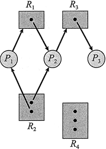
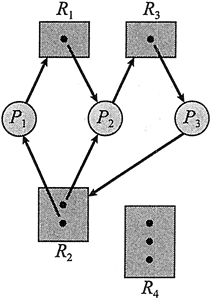
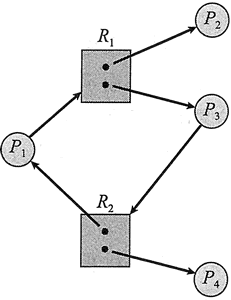
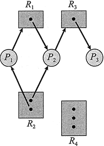
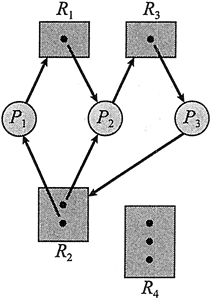
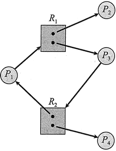

首页 > 编程笔记
什么是死锁，死锁的原因及解决办法（含四个必要条件）
在多道程序环境中，多个进程可以竞争有限数量的资源。当一个进程申请资源时，如果这时没有可用资源，那么这个进程进入等待状态。有时，如果所申请的资源被其他等待进程占有，那么该等待进程有可能再也无法改变状态。这种情况称为死锁。
或许，死锁的最好例证是 Kansas 立法机构在 20 世纪初通过的一项法律，其中说到“当两列列车在十字路口逼近时，它们应完全停下来，并且在一列列车开走之前另一列列车不能再次启动。”
如果一个进程申请某个资源类型的一个实例，那么分配这种类型的任何实例都可满足申请。否则，这些实例就不相同，并且资源分类没有定义正确。例如，一个系统有两台打印机。如果没有人关心哪台打印机打印哪些输出，那么这两台打印机可定义为属于同样的资源类型。然而，如果一台打印机在九楼，而另一台在底楼，那么九楼的用户就不会认为这两台打印机是相同的，这样每个打印机就可能需要定义成属于单独的类型。
各种同步工具如互斥锁和信号量，也应作为系统资源，它们是常见的死锁源。然而，一个锁通常与保护某个特定的数据结构相关联，即一个锁可用于保护队列的访问，另一个锁保护访问链接列表的访问，等等。由于这个原因，每个锁通常有自己的资源类型，并且这种定义不是一个问题。
进程在使用资源前应申请资源，在使用资源之后应释放资源。一个进程可能要申请许多资源，以便完成指定任务。显然，申请的资源数量不能超过系统所有资源的总和。换言之，如果系统只有两台打印机，那么进程就不能申请三台打印机。
在正常操作模式下，进程只能按如下顺序使用资源：
当进程或线程每次使用内核管理的资源时，操作系统会检查以确保该进程或线程已经请求并获得了资源。系统表记录每个资源是否是空闲的或分配的。对于每个已分配的资源，该表还记录了它被分配的进程。如果进程申请的资源正在为其他进程所使用，那么该进程会添加到该资源的等待队列上。
当一组进程内的每个进程都在等待一个事件，而这一事件只能由这一组进程的另一个进程引起，那么这组进程就处于死锁状态。这里所关心的主要事件是资源的获取和释放。资源可能是物理资源（例如，打印机、磁带驱动器、内存空间和 CPU 周期）或逻辑资源（例如，信号量、互斥锁和文件）。然而，其他类型的事件也会导致死锁（例如 IPC 功能）。
为说明死锁状态，假设一个系统具有三个 CD 刻录机。假定有三个进程，每个进程都占用了一台 CD 刻录机。如果每个进程现在需要另一台刻录机，那么这三个进程会处于死锁状态。每个进程都在等待事件“CD刻录机被释放”，这仅可能由一个等待进程来完成。这个例子说明了涉及同一种资源类型的死锁。
死锁也可能涉及不同资源类型。例如，假设一个系统有一台打印机和一台 DVD 驱动器。假如进程 Pi 占有 DVD 驱动器而进程 P2 占有打印机。如果 Pi 申请打印机而 Pj 申请 DVD 驱动器，那么就会出现死锁。
多线程应用程序的开发人员应始终警惕可能的死锁。多线程应用程序容易死锁，因为多线程可能竞争共享资源。
从进程 Pi 到资源类型 Rj 的有向边记为
在图形上，用圆表示进程 Pi，用矩形表示资源类型 Rj。由于资源类型 Rj 可能有多个实例，所以矩形内的点的数量表示实例数量。注意申请边只指向矩形 Rj，而分配边应指定矩形内的某个圆点。
当进程 Pi 申请资源类型 Rj 的一个实例时，就在资源分配图中加入一条申请边。当该申请可以得到满足时，那么申请边就立即转换成分配边。当进程不再需要访问资源时，它就释放资源，因此就删除了分配边。

图 1 资源分配图
图 1 的资源分配图表示了如下情况:
根据资源分配图的定义，可以证明：如果分配图没有环，那么系统就没有进程死锁。如果分配图有环，那么可能存在死锁。
如果每个资源类型刚好有一个实例，那么有环就意味着已经出现死锁。如果环上的每个类型只有一个实例，那么就出现了死锁。环上的进程就死锁。在这种情况下，图中的环就是死锁存在的充分且必要条件。
如果每个资源类型有多个实例，那么有环并不意味着已经出现了死锁。在这种情况下，图中的环就是死锁存在的必要条件而不是充分条件。
为了说明这点，下面回到图 1 所示资源分配图。假设进程 P3 申请了资源类型 R2 的一个资源。由于现在没有资源实例可用，所以就增加了有向边

图 2 存在死锁的资源分配图
这时，系统有两个最小环：

图 3 具有环的并未死锁的资源分配图
现在考虑图 3 所示的资源分配图。在这个例子中，也有一个环：
总而言之，如果资源分配图没有环，那么系统就不处于死锁状态。如果有环，那么系统可能会也可能不会处于死锁状态。在处理死锁问题时，这点是很重要的。
第三种解决方案为大多数操作系统所采用，包括 Linux 和 Windows。因此，应用程序开发人员需要自己编写程序，以便处理死锁。
接下来，我们简要阐述每种死锁处理方法。在进行之前，我们应该提一下，有些研究人员认为，这些基本方法不能单独用于处理操作系统的所有资源分配问题。然而，可以将这些基本方法组合起来，为每种系统资源选择一种最佳方法。
为了确保死锁不会发生，系统可以采用死锁预防或死锁避免方案。死锁预防方法确保至少有一个必要条件不成立。这些方法通过限制如何申请资源的方法来预防死锁。
死锁避免要求，操作系统事先得到有关进程申请资源和使用资源的额外信息。有了这些额外信息，系统可以确定对于每个申请，进程是否应等待。为了确定当前申请是允许还是延迟，系统应考虑现有的可用资源、已分配给每个进程的资源及每个进程将来申请和释放的资源。
如果系统不使用死锁预防或死锁避免算法，那么死锁情况可能发生。在这种情况下，系统可以提供一个算法来检查系统状态以确定死锁是否发生，提供另一个算法来从死锁中恢复（如果死锁确实已经发生）。
当没有算法用于检测和恢复死锁时，可能出现这样的情况，系统处于死锁，而又没有方法检测到底发生了什么。在这种情况下，未被发现的死锁会导致系统性能下降，因为资源被不能运行的进程占有，而越来越多的进程会因申请资源而进入死锁。最后，整个系统会停止工作，且需要人工重新启动。
虽然这看起来似乎不是一个解决死锁问题的可行方法，但是它却为大多数操作系统所采用，许多系统死锁很少发生，因此与使用频繁的并且开销昂贵的死锁预防、死锁避免和死锁检测与恢复相比，这种方法更为便宜。
此外，在有些情况下，系统处于冻结状态而不是死锁状态。例如，一个实时进程按最高优先级来运行（或其他进程在非抢占调用程序下运行），并且不将控制返回到操作系统。因此，系统应有人工方法可从这些状态中恢复过来，这些方法也可用于死锁恢复。
或许，死锁的最好例证是 Kansas 立法机构在 20 世纪初通过的一项法律，其中说到“当两列列车在十字路口逼近时，它们应完全停下来，并且在一列列车开走之前另一列列车不能再次启动。”
系统模型
有一个系统拥有有限数量的资源，需要分配到若干竞争进程。这些资源可以分成多种类型，每种类型有一定数量的实例。资源类型有很多，如 CPU 周期、文件、I/O 设备（打印机和 DVD 驱动器）等。如果一个系统有两个 CPU，那么资源类型 CPU 就有两个实例。类似地，资源类型打印机可能有 5 个实例。如果一个进程申请某个资源类型的一个实例，那么分配这种类型的任何实例都可满足申请。否则，这些实例就不相同，并且资源分类没有定义正确。例如，一个系统有两台打印机。如果没有人关心哪台打印机打印哪些输出，那么这两台打印机可定义为属于同样的资源类型。然而，如果一台打印机在九楼，而另一台在底楼，那么九楼的用户就不会认为这两台打印机是相同的，这样每个打印机就可能需要定义成属于单独的类型。
各种同步工具如互斥锁和信号量，也应作为系统资源，它们是常见的死锁源。然而，一个锁通常与保护某个特定的数据结构相关联，即一个锁可用于保护队列的访问，另一个锁保护访问链接列表的访问，等等。由于这个原因，每个锁通常有自己的资源类型，并且这种定义不是一个问题。
进程在使用资源前应申请资源，在使用资源之后应释放资源。一个进程可能要申请许多资源，以便完成指定任务。显然，申请的资源数量不能超过系统所有资源的总和。换言之，如果系统只有两台打印机，那么进程就不能申请三台打印机。
在正常操作模式下，进程只能按如下顺序使用资源：
- 申请：进程请求资源。如果申请不能立即被允许（例如，申请的资源正在被其他进程使用)，那么申请进程应等待，直到它能获得该资源为止。
- 使用：进程对资源进行操作（例如，如果资源是打印机，那么进程就可以在打印机上打印了）。
- 释放：进程释放资源。
当进程或线程每次使用内核管理的资源时，操作系统会检查以确保该进程或线程已经请求并获得了资源。系统表记录每个资源是否是空闲的或分配的。对于每个已分配的资源，该表还记录了它被分配的进程。如果进程申请的资源正在为其他进程所使用，那么该进程会添加到该资源的等待队列上。
当一组进程内的每个进程都在等待一个事件，而这一事件只能由这一组进程的另一个进程引起，那么这组进程就处于死锁状态。这里所关心的主要事件是资源的获取和释放。资源可能是物理资源（例如，打印机、磁带驱动器、内存空间和 CPU 周期）或逻辑资源（例如，信号量、互斥锁和文件）。然而，其他类型的事件也会导致死锁（例如 IPC 功能）。
为说明死锁状态，假设一个系统具有三个 CD 刻录机。假定有三个进程，每个进程都占用了一台 CD 刻录机。如果每个进程现在需要另一台刻录机，那么这三个进程会处于死锁状态。每个进程都在等待事件“CD刻录机被释放”，这仅可能由一个等待进程来完成。这个例子说明了涉及同一种资源类型的死锁。
死锁也可能涉及不同资源类型。例如，假设一个系统有一台打印机和一台 DVD 驱动器。假如进程 Pi 占有 DVD 驱动器而进程 P2 占有打印机。如果 Pi 申请打印机而 Pj 申请 DVD 驱动器，那么就会出现死锁。
多线程应用程序的开发人员应始终警惕可能的死锁。多线程应用程序容易死锁，因为多线程可能竞争共享资源。
死锁特征
发生死锁时，进程永远不能完成，系统资源被阻碍使用，以致于阻止了其他作业开始执行。在讨论处理死锁问题的各种方法之前，我们首先深入讨论一下死锁特点。必要条件
如果在一个系统中以下四个条件同时成立，那么就能引起死锁：- 互斥：至少有一个资源必须处于非共享模式，即一次只有一个进程可使用。如果另一进程申请该资源，那么申请进程应等到该资源释放为止。
- 占有并等待：—个进程应占有至少一个资源，并等待另一个资源，而该资源为其他进程所占有。
- 非抢占：资源不能被抢占，即资源只能被进程在完成任务后自愿释放。
- 循环等待：有一组等待进程 {P0，P1，…，Pn}，P0 等待的资源为 P1 占有，P1 等待的资源为 P2 占有，……，Pn-1 等待的资源为 Pn 占有，Pn 等待的资源为 P0 占有。
资源分配图
通过称为系统资源分配图的有向图可以更精确地描述死锁。该图包括一个节点集合 V 和一个边集合 E。节点集合 V 可分成两种类型：P={P1，p2,…，Pn}（系统所有活动进程的集合）和 R={R1，R2，…，Rm}（系统所有资源类型的集合）。从进程 Pi 到资源类型 Rj 的有向边记为
Pi->Rj，它表示进程 Pi 已经申请了资源类型 Rj 的一个实例，并且正在等待这个资源。从资源类型 Rj 到进程 Pi 的有向边记为 Rj->Pi，它表示资源类型 Rj 的一个实例已经分配给了进程 Pi。有向边 Pi->Rj 称为申请边，有向边 Rj->Pi 称为分配边。在图形上，用圆表示进程 Pi，用矩形表示资源类型 Rj。由于资源类型 Rj 可能有多个实例，所以矩形内的点的数量表示实例数量。注意申请边只指向矩形 Rj，而分配边应指定矩形内的某个圆点。
当进程 Pi 申请资源类型 Rj 的一个实例时，就在资源分配图中加入一条申请边。当该申请可以得到满足时，那么申请边就立即转换成分配边。当进程不再需要访问资源时，它就释放资源，因此就删除了分配边。

图 1 资源分配图
图 1 的资源分配图表示了如下情况:
-
集合 P、R 和 E：
- P={P1,P2,P3}
- R={R1,R2,R3,R4}
- E={P1 -> R1,P2 -> R3,R1 -> P2,R2 -> P2,R2 -> P1,R3 -> P3}
-
资源实例：
- 资源类型 R1 有 1 个实例；
- 资源类型 R2 有 2 个实例；
- 资源类型 R3 有 1 个实例；
- 资源类型 R4 有 3 个实例；
-
进程状态：
- 进程 P1 占有资源类型 R2 的 1 个实例，等待资源类型 R1 的 1 个实例。
- 进程 P2 占有资源类型 R1 的 1 个实例和资源类型 R2 的 1 个实例，等待资源类型 R3 的 1 个实例。
- 进程 P3 占有资源类型 R3 的 1 个实例。
根据资源分配图的定义，可以证明：如果分配图没有环，那么系统就没有进程死锁。如果分配图有环，那么可能存在死锁。
如果每个资源类型刚好有一个实例，那么有环就意味着已经出现死锁。如果环上的每个类型只有一个实例，那么就出现了死锁。环上的进程就死锁。在这种情况下，图中的环就是死锁存在的充分且必要条件。
如果每个资源类型有多个实例，那么有环并不意味着已经出现了死锁。在这种情况下，图中的环就是死锁存在的必要条件而不是充分条件。
为了说明这点，下面回到图 1 所示资源分配图。假设进程 P3 申请了资源类型 R2 的一个资源。由于现在没有资源实例可用，所以就增加了有向边
P3 -> R2（图 2)。

图 2 存在死锁的资源分配图
这时，系统有两个最小环：
P1—> R1 —> P2 一> R3 —> P3 —> R2 —> P1
P2 —> R3 —> P3 —> R2 —> P2

图 3 具有环的并未死锁的资源分配图
现在考虑图 3 所示的资源分配图。在这个例子中，也有一个环：
P1 —> R1 —> P3 —> R2 —> P1
然而，并没有死锁。注意，进程 P4 可能释放资源类型 R2 的实例。这个资源可分配给进程 P3，从而打破环。总而言之，如果资源分配图没有环，那么系统就不处于死锁状态。如果有环，那么系统可能会也可能不会处于死锁状态。在处理死锁问题时，这点是很重要的。
死锁处理方法
一般来说，处理死锁问题有三种方法：- 通过协议来预防或避免死锁，确保系统不会进入死锁状态。
- 可以允许系统进入死锁状态，然后检测它，并加以恢复。
- 可以忽视这个问题，认为死锁不可能在系统内发生。
第三种解决方案为大多数操作系统所采用，包括 Linux 和 Windows。因此，应用程序开发人员需要自己编写程序，以便处理死锁。
接下来，我们简要阐述每种死锁处理方法。在进行之前，我们应该提一下，有些研究人员认为，这些基本方法不能单独用于处理操作系统的所有资源分配问题。然而，可以将这些基本方法组合起来，为每种系统资源选择一种最佳方法。
为了确保死锁不会发生，系统可以采用死锁预防或死锁避免方案。死锁预防方法确保至少有一个必要条件不成立。这些方法通过限制如何申请资源的方法来预防死锁。
死锁避免要求，操作系统事先得到有关进程申请资源和使用资源的额外信息。有了这些额外信息，系统可以确定对于每个申请，进程是否应等待。为了确定当前申请是允许还是延迟，系统应考虑现有的可用资源、已分配给每个进程的资源及每个进程将来申请和释放的资源。
如果系统不使用死锁预防或死锁避免算法，那么死锁情况可能发生。在这种情况下，系统可以提供一个算法来检查系统状态以确定死锁是否发生，提供另一个算法来从死锁中恢复（如果死锁确实已经发生）。
当没有算法用于检测和恢复死锁时，可能出现这样的情况，系统处于死锁，而又没有方法检测到底发生了什么。在这种情况下，未被发现的死锁会导致系统性能下降，因为资源被不能运行的进程占有，而越来越多的进程会因申请资源而进入死锁。最后，整个系统会停止工作，且需要人工重新启动。
虽然这看起来似乎不是一个解决死锁问题的可行方法，但是它却为大多数操作系统所采用，许多系统死锁很少发生，因此与使用频繁的并且开销昂贵的死锁预防、死锁避免和死锁检测与恢复相比，这种方法更为便宜。
此外，在有些情况下，系统处于冻结状态而不是死锁状态。例如，一个实时进程按最高优先级来运行（或其他进程在非抢占调用程序下运行），并且不将控制返回到操作系统。因此，系统应有人工方法可从这些状态中恢复过来，这些方法也可用于死锁恢复。
关注公众号「站长严长生」，在手机上阅读所有教程，随时随地都能学习。内含一款搜索神器，免费下载全网书籍和视频。

微信扫码关注公众号